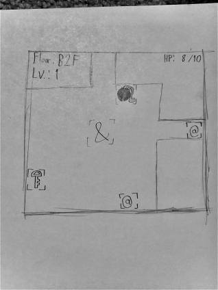
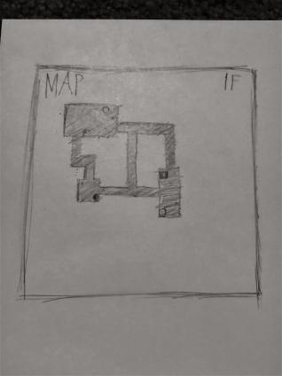

Crawler
High Concept
- Rehash of the old Mystery Dungeon game, but probably without procedural generation in the interest of development cycle time
Genre
- Dungeon-crawler, RPG
Platform
- Desktop only; mobile would require an additional revamp of controls, which I don't think I'll have time for
Story
- Premise involves the player-character being in some sort of cave, grotto, etc and must reach the end
- Big ideas could potentially include Chance and Control
Aesthetics
- Graphics - Likely cartoonish and 8-bit due to their flexibility and ease of production
- Sound - Ideally chiptune to match the graphics
Gameplay
- Mechanics
- Player movement is gridlocked. The player navigates through a dungeon in order to find a staircase to the next floor
- Player can use items and fend off monsters with attacks
- Control
- All controls are keyboard-based; arrow-keys and 2 letter keys (probably Z and X but subject to change)
- Onboarding
- All usable controls will be shown on the screen prior to starting the game, as well as the immediate objective
- Player learning
- To beat the game, players will need to understand how enemies behave and the best ways to respond in any given circumstance (fight when able, bait when possible, run when vulnerable, etc.)
- Players will also need to learn proper management of items and other resources to tilt the odds in their favor (saving bombs for stronger enemies, saving healing items for when they're most needed, etc.)
Screenshots
Mock-up of the ingame map, reachable via an in-game menu

Mock-up gameplay screenshot. Used symbols as placeholders for the player+enemy. Two items are also onscreen. All interactables will ideally have a border around them.
Documentation
Plaintext LinkThe Bestiary
LinkAbout the Author
Matthew Camera, 2nd Year Game Design & Development. Skillset includes programming, amatuer artistic ability, keytar proficiency, and deadpan humor.